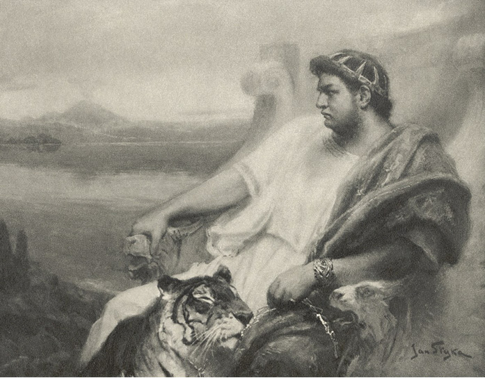

XVIII
Petronius Vinitiovi:
– Je s tebou zle, carissime! Dle všeho ti Venuše pomátla smysly, zbavila rozumu, paměti i daru mysliti na cokoliv jiného nežli na lásku. Přečti si někdy, co jsi mi odpověděl na můj list, a poznáš, jak tvůj duch nyní zlhostejněl ke všemu, co není Lygie, jak pouze jí se zabývá, k ní se ustavičně vrací a nad ní víří jako jestřáb nad vyhlédnutou kořistí. U Polluxe, vypátrej ji přece! Jinak se změníš, pokud tě oheň nepromění v popel, v egyptského netvora, jenž zamilovav se, jak se tvrdí, do bledé Isidy, pro všechno ohluchl, zlhostejněl a čeká pouze na noc, aby se mohl dívati na milenku kamennýma očima.
Probíhej si za večerů město přestrojen, dokonce navštěvuj křesťanské modlitebny se svým filosofem. Všecko, co budí naději a ubíjí čas, hodno jest chvály. Ale pro mé přátelství udělej jedno: onen Ursus, totiž Lygiin otrok, je dle všeho člověk neobyčejné síly; nuže, najmi si Krotona a podnikněte výpravu ve třech. Tak to bude bezpečnější a rozumnější. Křesťané, jelikož k nim náleží Pomponie Grecina i Lygie, dojista nejsou takovými lotry, za jaké všeobecně jsou pokládáni; nicméně podali při únosu Lygie důkaz, že jakmile jde o nějakou ovečku z jejich stáda, neznají žertů. Až spatříš Lygii, vím, že nebudeši s to, aby ses udržel, a budeš chtíti odvésti si ji okamžitě. Ale kterak to provedeš se samým Chilonidem? Kroto naproti tomu si již pomůže, byť bránilo Lygii deset takových chlapíků, jako jest Ursus. Nenechej se vykořistiti Chilonem, ale na Krotona peněz nelituj. Ze všech rad, jaké ti mohu poslati, tato jest nejlepší.
Zde se již přestalo mluvit o malé Augustě i o tom, že zemřela působením kouzel. Ještě se někdy Poppaea o nich zmíní, ale mysl Caesarova jest všecka zaujata čímsi jiným; ostatně, pravda-li, že diva Augusta jest opět v požehnaném stavu, rozptýlí se i v ní vzpomínka na ono dítě beze sledu. Jsme již několik dní v Neapoli či vlastně v Bajích. Kdybys byl schopen mysliti na cokoliv, ozvěny našeho pobytu jistě by narazily o tvůj sluch, neboť celý Řím zajisté nemluví o ničem jiném. Přijeli jsme tedy rovnou do Bají, kde na nás padly především vzpomínky na matku a výčitky svědomí. Ale víš, kam až dospěl Ahenobarbus? Nuže, tam, že i zavraždění matky jest mu pouze námětem k básním a podnětem, aby sehrával šaškovsko-tragické výjevy. Dříve cítil skutečné výčitky svědomí pouze potud, pokud je zbabělcem. Nyní, když se přesvědčil, že svět mu leží u nohou jako jindy a že se žádný bůh na něm nepomstil, pouze předstírá výčitky, aby dojal lidi svým osudem. Někdy se za nocí prudce zvedá, tvrdě, že jej pronásledují Furie, budí nás, ohlíží se, bere na se vzezření komedianta, hrajícího úlohu Orestovu1, a to ubohého komedianta, deklamuje řecké verše a rozhlíží se, obdivujeme-li se mu. A my, to se rozumí, se obdivujeme! A místo, abychom mu řekli: Jdi spát, šašku! – vpravujeme se rovněž do tragického tónu a chráníme velkého umělce proti Furiím. U Kastora, jistě jsi byl zpraven aspoň o tom, že vystoupí veřejně v Neapoli! Byli sehnáni všichni pobudové z Neapole a okolních měst, kteří naplnili arénu tak nepříjemným zápachem po česneku a potu, že jsem děkoval bohům, že jsem byl s Ahenobarbem za jevištěm, místo abych seděl v prvních řadách mezi Augustiany. A věříš, že se bál? Bál se opravdu! Bral mne za ruku a přikládal si ji na srdce, které skutečně bušilo zrychleným tlukotem. Měl krátký dech a v okamžiku, kdy bylo třeba vystoupiti, zbledl jako pergamen a čelo se mu pokrylo krůpějemi potu. A přece věděl, že ve všech řadách sedí připravení praetoriáni, opatření kyji, jimiž měli podněcovati nadšení, kdyby toho bylo třeba. Ale nebylo toho třeba. Žádná smečka opic z okolí Kartága2 nedovede tak vřískat, jako vřískala ta holota. Povídám ti, že zápach po česneku šířil se až na jeviště. Nero se ukláněl, tiskl si ruce na srdce, posílal vzdušné polibky a plakal. Pak se přihnal mezi nás, kteří jsme čekali za jevištěm, jako zpitý, volaje: ‚Čím jsou všecky triumfy proti tomuto mému!‘ A tam ona holota stále ještě řvala a tleskala, vědouc, že vytleskává si tím přízeň, dary, besedu, loterní lístky a novou podívanou na Caesara šaška. Pranic se jim nedivím, že tleskali, protože to nebylo dosud viděno. On pak opakoval přes tu chvíli: ‚Hle, co jsou Řekové! Hle, co jsou Řekové!‘ A zdá se mi, že se od té chvíle jeho nenávist k Římu ještě vzmohla. Je pravda, do Říma byli vysláni zvláštní rychlí poslové se zprávou o triumfu a my očekáváme v těchto dnech díky senátu. Hned po prvním vystoupení Neronově došlo tu ke zvláštní příhodě. Divadlo se totiž zřítilo, ale tehdy, když lidé byli již venku. Byl jsem na místě neštěstí a neviděl jsem, že by byla vytažena jediná jen mrtvola ze sutin. Mnoho lidí, a to i mezi Řeky, pohlíží na to jako na hněv bohů za zneuctívání císařské moci; on však tvrdí naproti tomu, že je to milost bohů, kteří chovají zřejmou péči o jeho zpěv a o ty, kteří jej poslouchají. Odtud obětování po všech chrámech a veliká díků činění, pro něho pak nový podnět k cestě do Achaie. Před několika dny však mi řekl, že se bojí, co tomu řekne římský lid a nevzbouří-li se jak z lásky k němu, tak i z obavy o rozdávání obilí a o hry, které by mohly při delší nepřítomnosti Caesarově odpadnouti.
Nicméně pojedeme do Beneventa, abychom shlédli ševcovskou nádheru, jakou se holedbá Vatinius, a tamodtud pod ochranou božských bratří Heleniných do Řecka. Co se mne týče, zpozoroval jsem jedno: že, je-li člověk mezi šílenci, stává se z něho také šílenec, ba co více, nalézá i jakýsi půvab v šílenství. Řecko a cestování za zvuků tisíce kytar, nějaký triumfální pochod Bakchův mezi nymfami a bakchantkami, ověnčenými myrtovou zelení; pak vozy, do nichž jsou zapřažení tygři, květy, thyrsy3, věnce, jásot: Evoe! – hudba, poesie i klasická Helada, to všecko je hezké, ale my zde chováme záměry ještě smělejší. Rádi bychom utvořili jakési východní, pohádkové impérium, říši palem, slunce, poesie a skutečnosti změněné v sen i života změněného v jedinou rozkoš. Rádi bychom zapomněli na Řím a váhy světa umístili někam mezi Řecko, Asii a Aegypt, žili životem ne lidí, nýbrž bohů, neznali, co je to všednost, projížděli se na zlatých galejích4 ve stínu nachových plachet po Archipelagu, byli Apollonem, Osiriem5 a Baalem6 v jedné osobě, růžověli s červánky, zlatili se spolu se sluncem, stříbřili se s měsícem, vládli, zpívali, snili… A uvěříš, že já, který mám rozumu ještě za sestercii a soudnosti za as, přece jen se nechávám strhovati oněmi fantasiemi a nenechávám se strhovati proto, že jsou-li nemožné, jsou aspoň veliké a neobyčejné…? Takové pohádkové impérium bylo by však něčím, co by se jednou, jednou, po dlouhých staletích, zdálo lidem jako sen. Pokud Venuše nevezme na sebe postavu takové Lygie, nebo aspoň takové otrokyně jako Eunike, a pokud života nevyzdobím uměním, život sám je prázdný a často mívá vzezření opice. Ale Rudobradý neuskuteční svých záměrů, byť i proto, že v onom pohádkovém království poesie a východu nesmí býti místo pro zrady, hanebnosti a smrt; v něm však pod zevnějškem básníka sedí ubohý komediant, přihlouplý kočí a duchaprázdný tyran. A tak zatím odpravujeme lidi, když nám překážejí, jakýmkoliv způsobem. Ubohý Torquatus Silanus je již stínem. Podřezal si žíly před několika dny. Lecanius a Licinius přijímají konsulát se strachem, starý Thrasea neujde smrti, protože se odvažuje býti poctivým. Tigellinus nemůže dosud vyhotoviti proti mně rozkaz, abych si podřezal žíly. Ještě jsem tu nezbytný nejen jako elegantiae arbiter, nýbrž i jako člověk, bez jehož rady a vkusu by se mohlo státi, že se výprava do Achaie nezdaří. Nicméně myslím si nejednou, že dříve či později čeká na mne takový konec, a víš, oč mi pak běží? Aby Rudobradý nedostal toho mého poháru myrrenského7, který znáš a jemuž se obdivuješ. Budeš-li v okamžiku mé smrti u mne, věnuji ti jej; budeš-li daleko, roztříštím jej. Ale zatím máme před sebou ještě ševcovské Beneventum, olympské Řecko a Fatum, které každému vytyčuje cestu neznámou a nepředvídanou. Buď zdráv a najmi Krotona, jinak ti odvlekou Lygii po druhé. Chilonida, až ho nebudeš potřebovati, mně pošli, ať budu kdekoliv! Snad z něho udělám druhého Vatinia a snad konsulové a senátoři budou se ještě před ním třásti, jako se třesou před oním rytířem Dratvičkou. Stálo by za to dočkati se té podívané. Až zase nabudeš Lygie, dej mi věděti, abych za vás obětoval pár labutí a párek holubů ve zdejším kulatém chrámečku Venušině. Viděl jsem kdysi Lygii ve snách, na tvém klíně, jak hledá tvé polibky. Přičiň se, aby to byl sen věštecký! Ať na tvém nebi není mraků, a budou-li, ať mají barvu i vůni růží! Buď zdráv a na shledanou!

Nero pozoruje v Bajích soptící Vesuv
Bájný hrdina, jenž pomstil násilnou otcovu smrt tím, že zavraždil jeho bratra a svou matku, za což byl stíhán Furiemi. ↩︎
Starobylé město v severní Africe, centrum obchodu, zbořeno 146 př. n. l. ↩︎
Třtinová hůl, ovinutá břečťanem a révovím a ověšená posvátnými stuhami. ↩︎
Veslové válečné lodi. ↩︎
Staroegyptský bůh slunce a řeky Nilu. ↩︎
Nejvyšší bůh starověkých židů. ↩︎
Správně: mirrový, tedy zhotovený z polodrahokamu mirra (druh živce); ve starověku měly předměty z něj vyrobené obrovskou cenu. ↩︎